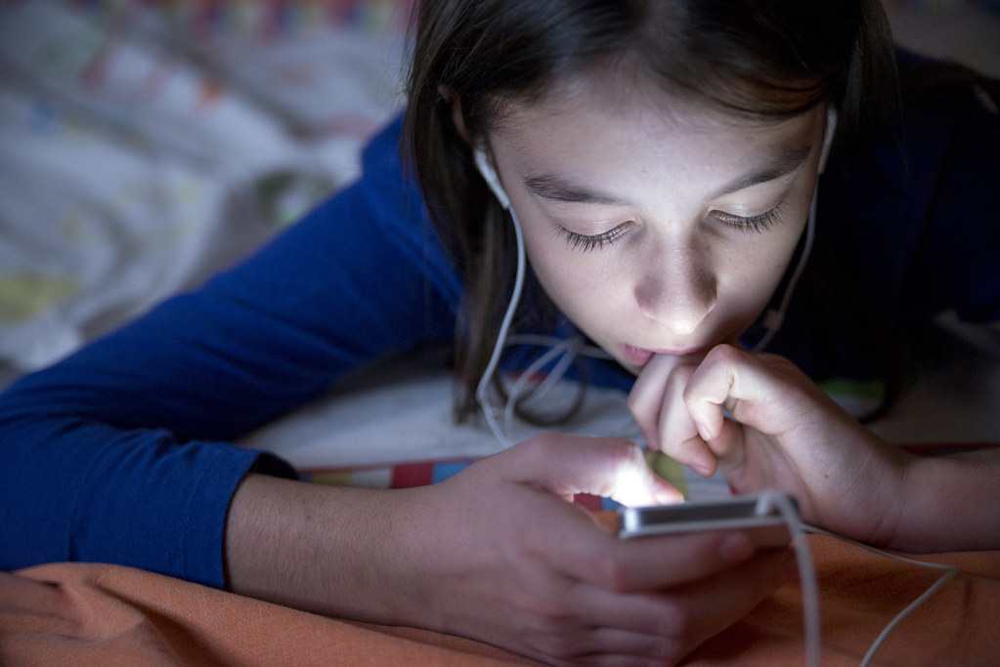

Zoey's Adventure

"499538112"by verkeorg is licensed under CC BY-SA 2.0


Zoey calls her mom and the phone rings. The phone rings for a few moments before the automated message starts to play. She calls again and the voice message plays once more. She begins to feel even more afraid, her mom always answers her calls. Zoey realises that things must be getting worse with this sickness. She wonders if her mother was in danger, but was also concerned for her own safety.
Zoey quickly jumps up from her couch and rushes to her door and grabs onto the door handle. But she remebers what the news reporter had said about how to stay safe during this unknown sickness.
Should Zoey go outside?
1. YES GO OUTSIDE AND LOOK FOR HELP
2. NO IT MIGHT BE TO RISKY